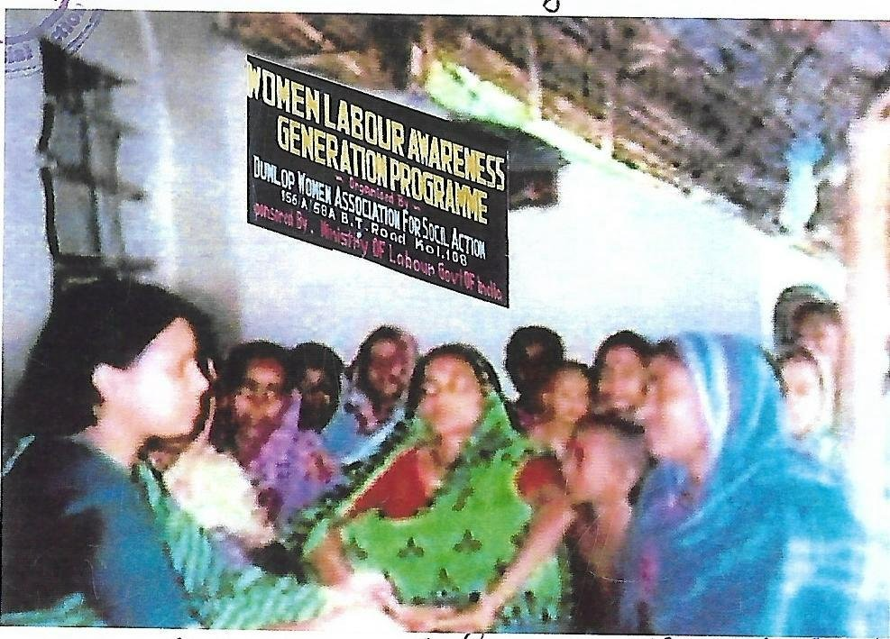
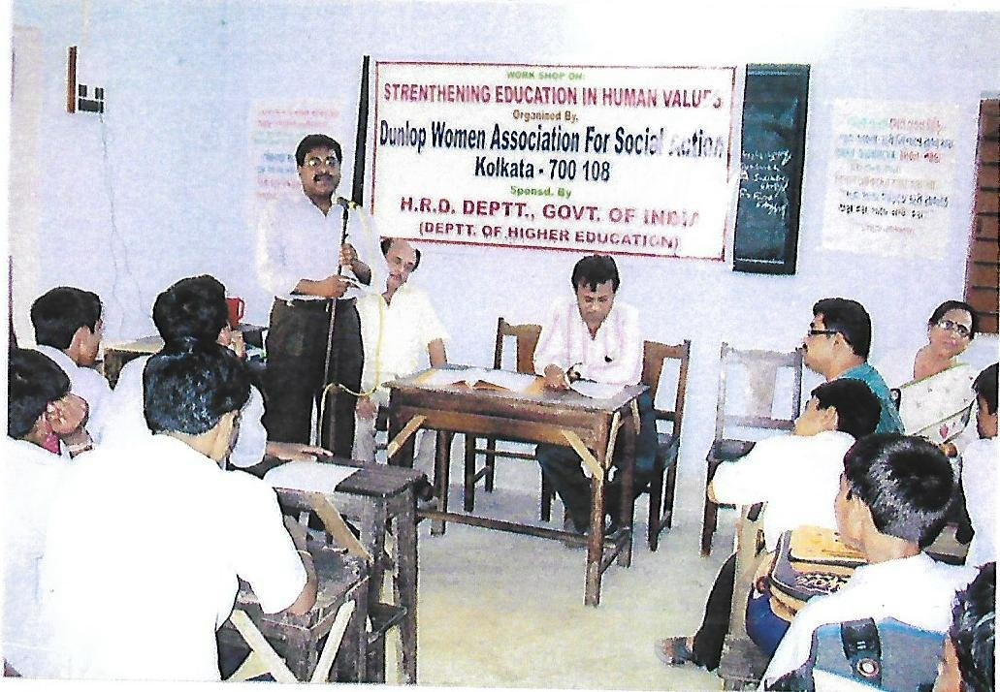
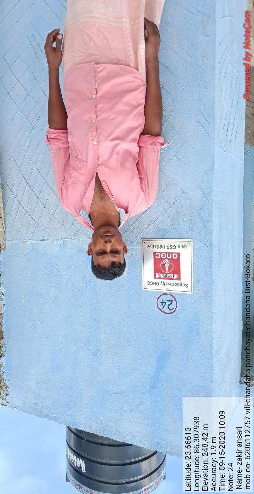

Programme Highlights
Road Safety Awareness Programme
DWASA has been at the forefront of road safety advocacy in Kolkata and Jharkhand. We organise rallies, community walks, and poster campaigns to educate pedestrians, cyclists, motorists, and school students about traffic rules and road hazards.
In 2023, DWASA conducted a road safety programme with school students on Kolkata roads (17 January, 2023). In 2024–25, the programme was expanded to Jamshedpur, Jharkhand, where at least 200 people participated.
Our team distributes safety literature, engages Kolkata Police, and uses mobile awareness vehicles with loudspeakers to maximise reach in public spaces.

Women Empowerment Programme
DWASA's women empowerment initiatives focus on skill development, self-reliance, leadership building, legal awareness, financial literacy, and awareness of women's rights and government welfare schemes.
Training sessions and workshops help women acquire vocational skills, improve decision-making, and gain the confidence to participate actively in family and community affairs. We also encourage the formation and strengthening of Self-Help Groups (SHGs) to support income-generating activities.
Through these initiatives, many beneficiaries have reported increased self-confidence, improved economic independence, and greater awareness of their rights and responsibilities.

Free Coaching & Book Distribution
DWASA operates a free coaching centre for underprivileged students from Class 5 to Class 12 in Kolkata. Experienced teachers provide personalised academic guidance to help students prepare for board and competitive examinations.
The organisation also distributes free school books, notebooks, and stationery to needy students — ensuring that economic hardship never becomes a barrier to education. In 2024–25, over 50 students directly benefited from the book distribution drive.
DWASA also distributes free new clothes to school-going children from BPL families during the Durga Puja festival, bringing joy and dignity to 65+ students each year.

Mother & Child Care Programme
DWASA's Mother & Child Care Programme focuses on improving the health and well-being of mothers and young children from economically disadvantaged communities in rural West Bengal.
The programme covers maternal health, safe pregnancy practices, institutional delivery, post-natal care, child nutrition, immunisation, breastfeeding, hygiene, and prevention of common childhood diseases. In 2024–25, more than 200 mothers and children benefited directly.
In 2022–23, DWASA distributed fruits and Vitamin D supplements to 30 women and children at R.G. Kar Medical College & Hospital on 1st July, 2023.

Health Awareness Programme
Incidence of disease is significantly reduced by health awareness. DWASA provides health education to underprivileged communities with limited access to information, empowering individuals with knowledge to choose healthy habits.
Focus areas include health & hygiene, hand washing, menstrual hygiene, oral hygiene, nutrition, dengue, breastfeeding, anaemia, tobacco sensitisation, immunisation, cancer, and mental health. Qualified doctors, health workers, and resource persons conduct interactive sessions using visual aids and real-life examples.
Free basic health check-ups — including blood pressure, blood sugar, haemoglobin, and BMI — are also provided during selected programmes.

Rural Sanitation — ONGC CSR
In partnership with ONGC as a CSR initiative, DWASA has constructed and installed household toilets for marginalised families in Chandaha Panchayat, Bokaro District, Jharkhand.
Each toilet is numbered and geo-tagged with beneficiary details to ensure accountability and transparency. This initiative has significantly improved sanitation access and dignity for underprivileged rural households.
DWASA has also distributed essential relief supplies, masks, sanitisers, and medical equipment to CHC hospitals in Khunti and Arki blocks of Jharkhand.
